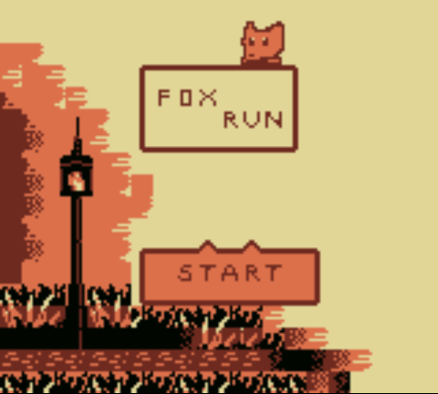
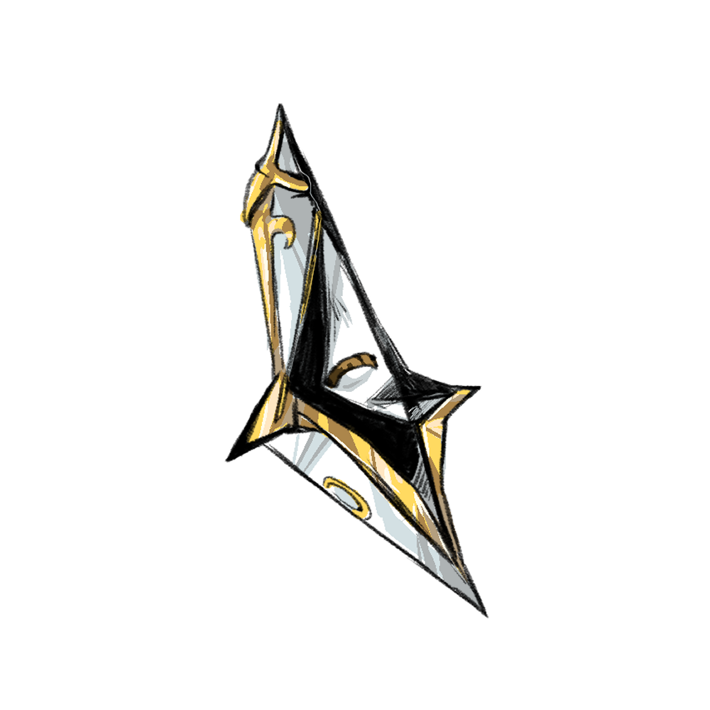
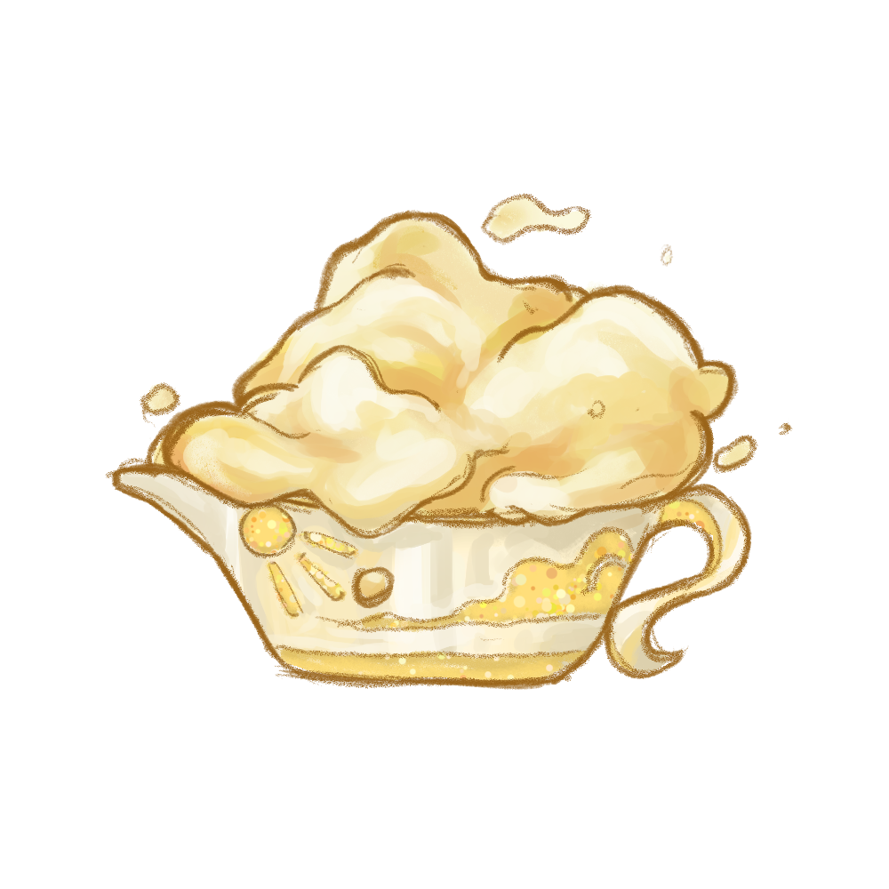
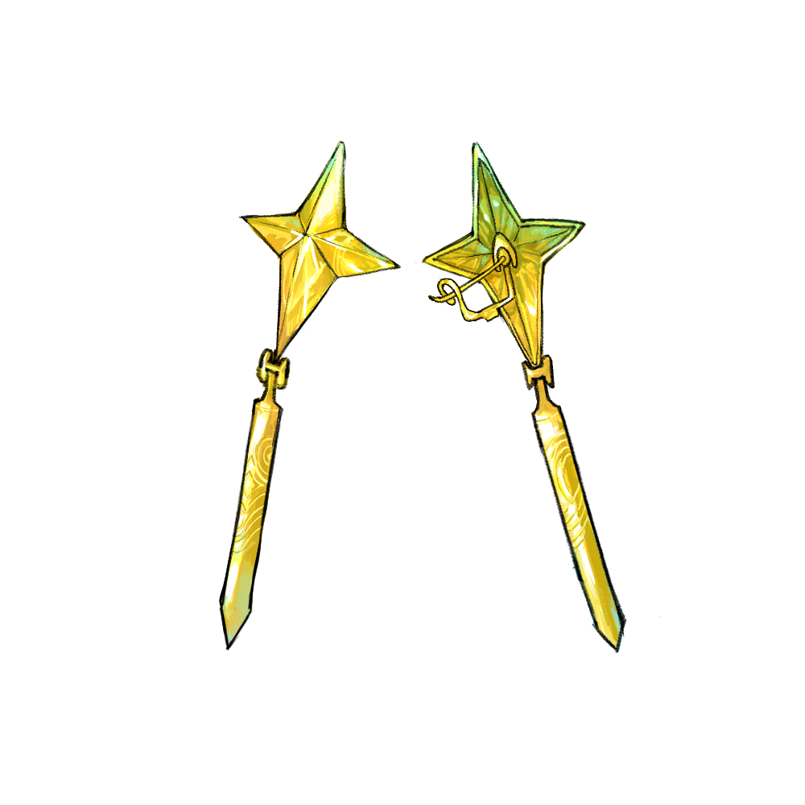

Yunxi Wang · 作品集Bring the Spring
 Inbetween · 合作项目，场景美术由合作者创作
Inbetween · 合作项目，场景美术由合作者创作
四个世界，四种探索
精选作品 · 01—04
Yunxi Wang · 作品集EnlightenThem
Yunxi Wang · 作品集Fox Run

Yunxi Wang · 作品集插画选辑
卷末
插画选辑
游戏之外也一直在画：厚涂、赛璐璐、像素、灰调。
1 / 13
插画
动画
自我介绍
关于我



你好，我是 Yunxi Wang，也可以叫我 Welkin。我是一名游戏开发者和插画师，目前在 Hamilton College 担任 Creative Academic Technology Tutor，帮助学生用 3D、VR 和游戏引擎实现自己的项目，也会开展教学。
在 Bring the Spring、A Legend 和 EnlightenThem 这些个人项目里，我负责程序、美术、动画、音效与文案。Fox Run 是我与同学合作完成的作品；在 Inbetween 中，我负责程序、动画与叙事，美术由合作者创作。我也为桌面角色扮演（TRPG）项目设计过模组，并绘制了整套道具。
你也可以在 itch.io 找到我的游戏：welkin0701.itch.io
履历 · Résumé
学习经历 · 工作经历 · 项目经验 · 技能